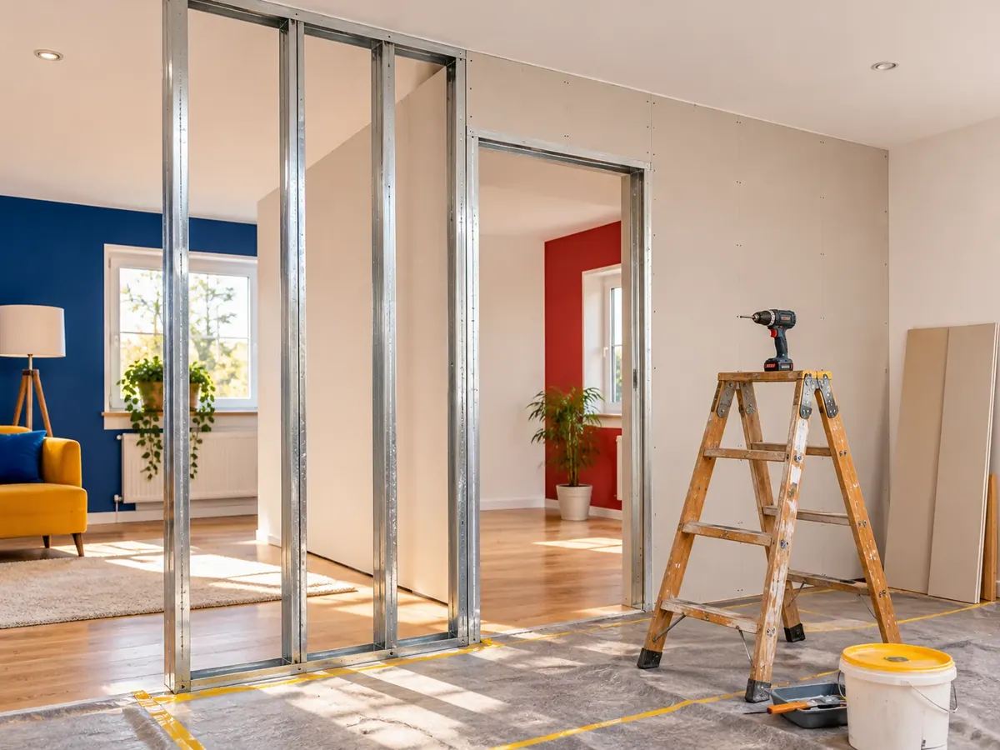

Wände einziehen
Ein großes Zimmer, aber zwei Kinder? Ein Büro, das ein eigenes Zimmer braucht? Eine Trockenbauwand steht schnell, macht wenig Dreck und ist am Ende so glatt wie jede andere Wand.
- Ständerwände aus Metallprofilen und Gipskarton, die Ständer im Abstand von 62,5 cm
- Türöffnungen und Durchgänge, auf Wunsch mit Zarge (dem Türrahmen) zum Einbauen
- Dämmung in der Wand, damit man nebenan nicht jedes Wort hört
- Vorsatzschalen: eine zweite Wandschicht, hinter der Leitungen und Rohre verschwinden
- Gespachtelt bis Stufe Q3, also glatt genug für Farbe oder Tapete